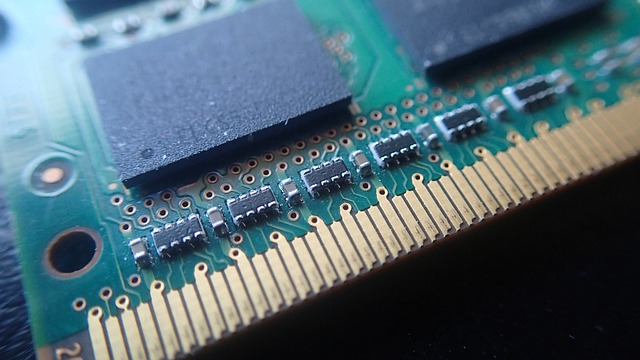

Memomoria RAM
La memoria RAM (Random Access Memory) es un componente crucial en cualquier sistema
informático. A diferencia del almace
namiento de estado sólido (SSD), la RAM es volátil y se utiliza para almacenar temporalmente datos y
programas que están siendo utilizados activamente por la computadora.
La velocidad de acceso a los datos en la RAM es extremadamente rápida, ya que no hay partes
mecánicas
involucradas, a diferencia de los discos duros convencionales (HDD).

Ventajas de la memoria RAM
- Rendimiento: La velocidad de acceso a los datos es incomparable, lo que mejora significativamente el
rendimiento del sistema.
- Sin partes móviles: Al igual que los SSD, la memoria RAM no tiene componentes mecánicos,
lo que la hace más
rápida y silenciosa.
- Disponibilidad inmediata: El acceso a los datos es instantáneo, lo que contribuye a un arranque más rápido y
una respuesta ágil del sistema.
- Bajo consumo de energía: Al no utilizar motores, el consumo de energía es considerablemente más bajo en
comparación con los discos HDD.
- Resistente a caídas y golpes.
Mayor Menor tamaño y peso.
Inconvenientes de la memoria RAM
- Capacidad limitada: La cantidad de datos que puede almacenar es limitada y depende de la capacidad de la
memoria instalada.
- Volatilidad: Los datos se pierden cuando se apaga la computadora, lo que significa que la memoria RAM no
almacena información de forma permanente.
- Costo: En comparación con otros tipos de almacenamiento, la ampliación de la memoria RAM puede ser costosa.
Fuente: TuElectronica.es